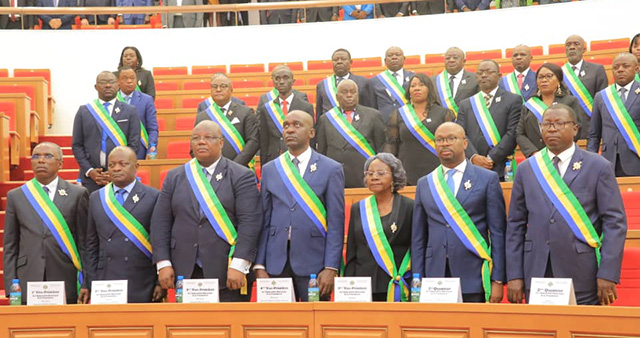

Etat politique
Le Kenya bénéficie d'une grande stabilité politique depuis son indépendance,

malgré d'importants changements politiques et plusieurs crises avec ses
voisins. La réforme de 1997 assouplit certaines lois héritées de la période
coloniale et qui limitaient la liberté de parole et de rassemblement.
President
William Kipchirchir Samoei Arap Ruto est né à Sugoi dans la vallée
 du Rift dans une famille pauvre kalenjin. Toute biographie de Ruto
mentionne que pendant sa jeunesse, il a vendu des poulets au bord
de la route pour aider financièrement sa famille[2],[3].
Il deviendra ensuite l’un des hommes les plus riches du pays[4].
Il possède notamment un ranch de 2 500 acres, un énorme élevage de
volailles et des investissements dans l'industrie hôtelière[5].
du Rift dans une famille pauvre kalenjin. Toute biographie de Ruto
mentionne que pendant sa jeunesse, il a vendu des poulets au bord
de la route pour aider financièrement sa famille[2],[3].
Il deviendra ensuite l’un des hommes les plus riches du pays[4].
Il possède notamment un ranch de 2 500 acres, un énorme élevage de
volailles et des investissements dans l'industrie hôtelière[5].
Rachel Ruto, parfois surnommée Mama Rachel, est une enseignante et militante kényane pour les droits des femmes, née le 20 novembre 1968 à Likuyani (comté de Kakamega). En tant qu'épouse du président kényan William Ruto, elle est la Première dame du Kenya depuis septembre 2022.
la femme du president ...
Rachel Ruto, parfois surnommée Mama Rachel, est une enseignante et militante <
kényane pour les droits des femmes, née le 20 novembre 1968 à Likuyani
(comté de Kakamega). En tant qu'épouse du président kényan William Ruto,
elle est la Première dame du Kenya depuis septembre 2022.